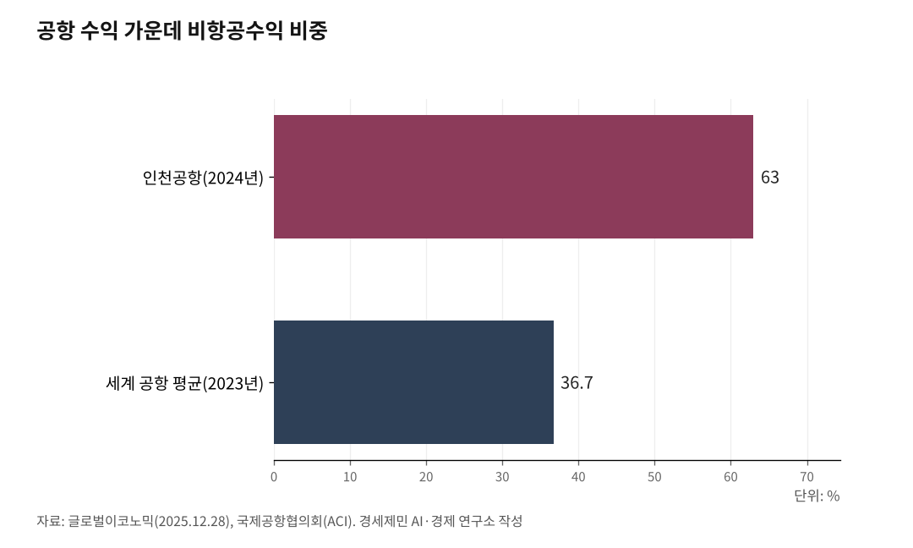

[세계3위 인천공항미래⑬] 면세 한 곳에 매달린 인천공항, 수익원을 넓혀야 산다
매출의 63%가 면세·상업인데 그 면세가 사양산업이 됐다
안으로는 면세 밖 수익을 늘리고, 밖으로는 공항수출로 벌어야 한다
인하대 해양AI융합센터 김갑봉 연구교수
여객과 화물을 아무리 늘려도, 그것을 돈으로 바꾸는 곳은 상업이다. 인천은 그 상업에 세계 어느 공항보다 깊이 기댄다. 매출의 63%가 비항공수익이고, 그 60%가 면세 한 품목에서 나온다. 깊이 기댄 만큼 강점이자 함정이다. 이 글은 물동량을 부가가치로 바꾸는 세 갈래, 상업과 공항수출, 도심항공교통을 짚는다.

1. 인천은 세계 평균의 두 배를 상업에서 번다
인천국제공항공사 매출에서 비항공수익 비중은 63%다(2024년 기준). 국제공항협의회(ACI) 집계로 2023년 세계 공항 수익에서 비항공수익 비중은 36.7%였다. 인천은 세계 평균의 거의 두 배를 상업에서 번다. 이착륙료가 아니라 면세와 상업 임대료가 본업 자리에 앉았다.
이 구조는 강점이다. 여객 머릿수가 완만해져도 1인당 부가가치를 키우면 수익은 는다. 세계 선진 공항이 항공수익보다 비항공수익 경쟁에 매달리는 까닭이 여기 있다.
그러나 두 배는 곧 쏠림이다. 비항공수익의 약 60%가 면세점 한 품목에서 나온다. 한 다리에 온 몸무게를 실은 셈이다.

2. 면세점은 사양산업이 됐다
인천공항 면세점은 한때 황금알을 낳는 거위로 불렸다. 임대료가 비싸도 수익이 보장된다고 봤다. 그러나 코로나19 뒤 외국인 관광객의 소비 패턴이 바뀌면서 매출이 무너졌다. 고환율과 경기 둔화로 구매력도 얇아졌다. 팔수록 손해 보는 사양산업이 됐다.
임대료를 매기는 방식이 상처를 키운다. 인천 면세점 임대료는 국제선 여객 수에 사업자가 써낸 객당 임대료를 곱해 매긴다. 신세계면세점은 2023년 입찰에서 여객 1인당 9020원을 써냈다. 과거에는 여객이 늘면 매출도 늘어 이 방식이 맞았다.
그러나 이제 여객과 매출이 끊겼다. 여객은 세계 3위로 회복됐는데 매출은 따라오지 않는다. 비용은 여객을 따라 오르는데 매출은 여객과 끊겼으니, 여객이 늘수록 적자가 커진다.
버티지 못한 사업자가 떠났다. 신라면세점이 2025년 9월, 신세계면세점이 10월 사업권을 반납했다. 두 회사는 임대료 인하를 요청했으나 공사가 받아들이지 않았다. 신세계는 위약금 1910억원을 물었다. 업계가 매달 60억원, 한 해 720억원으로 추산하는 적자를 더 지느니 나가는 편이 낫다고 봤다. 세계 최고 매출을 내는 공항이 사업자를 잃는 역설이다.
공사는 두 사업자가 떠난 구역을 연내 다시 입찰에 부친다. 그러나 임대료를 매기는 방식을 그대로 두면 새 사업자도 같은 적자에 빠지기 쉽다. 매출연동으로 바꾸는 일이 첫 단추다. 국제적으로는 면세 임대료를 매출에 연동해, 매출이 줄면 임대료도 줄여 위험을 나눈다. 여객이 아니라 매출에 임대료를 걸어야 면세가 살고, 면세가 살아야 공항도 길게 번다.
3. 프라포트는 29개 공항을 운영한다
국내 물동량에는 천장이 있다. 그 한계를 밖에서 넓히는 길이 공항수출이다. 그러나 인천은 아직 후발이다. 독일 프라포트는 4개 대륙 29개 공항을, 프랑스 파리공항그룹(ADP)은 26개 공항을 운영한다. 둘 다 지분을 갖고 직접 굴린다. 프라포트는 그리스 14개 지역공항과 페루 리마 신터미널까지 맡고, ADP는 그 26개 공항에서 한 해 3억7900만명을 실어 나른다.
인천은 2009년 이라크 아르빌공항 컨설팅으로 시작해 18개국 39개 사업에 진출하고 누적 4억2399만달러를 수주했다(2026년 기준). 아직은 컨설팅이 많다. 그러나 사다리를 오르고 있다. 쿠웨이트공항 위탁운영에 이어 인도네시아 바탐공항을 2022년부터 민관협력(PPP)으로 맡아 공사가 처음으로 해외공항을 직접 운영했고, 필리핀 마닐라공항 투자개발(2024~2049)에도 참여한다.
특히 우즈베키스탄 우르겐치공항에서는 프랑스 ADP와 터키 타브(TAV) 같은 세계 강자를 제치고 사업자로 뽑혔다. 공사가 100% 운영권을 갖는 첫 해외공항 사업이다. 3년간 연 300만명 규모 터미널을 짓고 19년을 운영한다. 2025년 11월 우즈베키스탄 정부와 정부지원협약을 맺었다. 후발이라도 사다리를 오르면 강자를 따라잡는다.
공항을 짓고 운영한 25년 경험이 그 밑천이다.
4. 다음 성장축, 도심항공교통
세 번째 길은 다음 세대를 미리 잡는 일이다. 인천공항공사가 참여한 K-UAM 원팀 컨소시엄은 2025년 10월 16일부터 31일까지 인천 아라뱃길 노선(청라에서 계양)에서 국내 최초로 도심 UAM 통합운용 실증을 마쳤다. 공사는 교통관리와 버티포트 운영 두 분야에서 실증사업자로 지정받아, 지상 이동부터 비행과 착륙까지 전 단계 운용성을 검증했다.
버티포트(vertiport, 도심항공교통 이착륙장)는 도심항공교통(UAM)이 뜨고 내리는 터다. 공항이 활주로를 깔아 항공기를 받았듯, 다음 세대에는 버티포트를 깔아 도심 하늘길을 받는다. 정부는 2028년 상용화를 목표로 잡았다. 공항 접근성을 혁신하고 새 이동수단을 미리 잡는 일이 세 번째 성장축이다.
5. 면세 밖으로 수익을 넓힌다
사장은 버는 힘을 두껍게 한다. 첫째, 여객연동 임대료를 매출연동으로 손봐 면세 사업자와 공항이 함께 사는 구조를 만든다. 둘째, 면세 밖 상업과 배후단지, 정비(MRO), 공항 데이터로 수익원을 넓혀 63%의 한 다리를 여러 다리로 바꾼다. 셋째, 공항수출을 컨설팅에서 지분투자로 키워 프라포트와 ADP를 따라간다. 넷째, 버티포트와 도심항공교통을 다음 성장축으로 준비한다.
물동량을 늘리는 일과 그 물동량을 돈으로 바꾸는 일은 다른 과제다. 앞 편들이 여객과 화물을 늘리는 길이었다면, 이 글은 그것을 부가가치로 바꾸는 길이다. 두 길이 만나야 활성화가 완성된다.
인천은 세계 어느 공항보다 상업에 깊이 기댄다. 그 깊이가 강점이 되려면 한 다리를 여러 다리로 바꾸고, 국내를 넘어 밖에서도 벌어야 한다.
참고문헌
국제공항협의회(ACI), "공항 비항공수익 현황"(2023년 세계 공항 수익 구성 항공 53.6%·비항공 36.7%·비운영 9.7%), blog.aci.aero 2025.5. (원문 직접 확인).
프라포트(Fraport), "글로벌 그룹 공항"(4개 대륙 29개 공항 운영, 그리스 14개 지역공항·페루 리마 터미널 등), https://www.fraport.com/en/our-group/our-global-group-airports-and-companies.html (원문 직접 확인).
파리공항그룹(Groupe ADP), "2024·2025 연간 실적"(26개 공항 네트워크 운영, 2024년 여객 3억6400만명·2025년 3억7900만명), https://presse.groupeadp.fr/2024-full-year-results/ (공식 발표 직접 확인).
인천국제공항공사, "해외사업 개요·추진현황"(18개국 39개 사업, 누적 수주액 4억2399만달러, 인도네시아 바탐공항 PPP 운영 2022~2047, 필리핀 마닐라공항 투자개발 2024~2049), https://www.airport.kr/co_ko/785/subview.do
헤럴드경제, "인천공항공사, 우즈베키스탄 우르겐치공항 개발운영 맡는다"(공사 100% 운영권 확보 첫 해외공항, 프랑스 ADP·터키 TAV 제치고 우선협상대상자 선정 2025.4.22, 3년 건설·19년 운영·연 300만명 규모 터미널), 2025.4.22., https://mbiz.heraldcorp.com/article/10470785
인천국제공항공사, "우르겐치공항 개발운영사업 정부지원협약(GSA) 체결"(2025.11 우즈베키스탄 정부와 체결), https://www.airport.kr/bbs/co_ko/84/139085/artclView.do
인천국제공항공사, "국내 최초 도심 UAM 통합운용 실증 완료"(K-UAM 원팀, 2025.10.16~31, 인천 아라뱃길, 2028년 상용화 목표), 경기일보 2025.11.3., https://www.kyeonggi.com/article/20251103580190
글로벌이코노믹, "세계 3위 여객·사상 최대 실적…'면세점이 본업 된 인천공항'의 그늘"(비항공수익 63%·면세점 약 60%, 신라·신세계 사업권 반납), 2025.12.28., https://www.g-enews.com/article/Real-Estate/2025/12/202512261352202415a9fc143920_1
경향신문, "'더는 못 버틴다' 신세계 면세점도 결국 인천공항서 빠진다"(신라 DF1 2025.9.18·신세계 DF2 2025.10.30 사업권 반납, 신세계 위약금 1910억원·2023년 입찰 여객 1인당 임대료 9020원·적자 매달 60억원·연 720억원, '황금알 거위'에서 코로나 후 소비패턴 변화로 적자), 2025.10.30., https://www.khan.co.kr/article/202510301455001